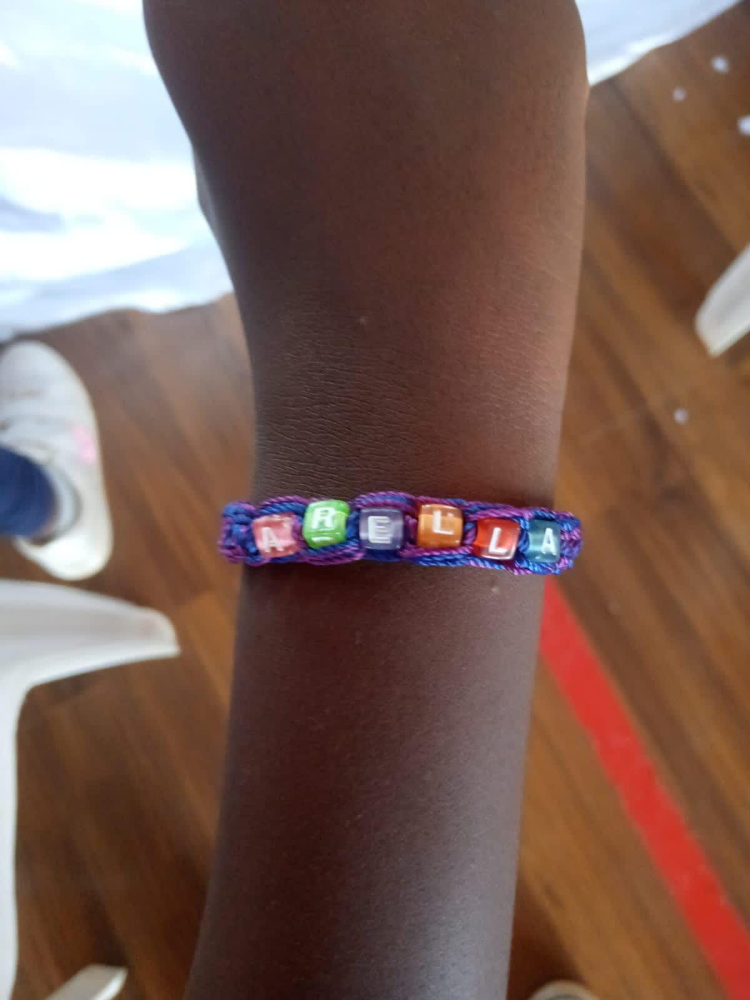

Thank you for tuning back in for this week's read. Let us take you through the day.
We started the day off with God like we always do. We prayed, then gathered around for the word of the day which was on recognizing the depth of God's pursuit for us humans.
We learnt and discussed on how humble God had to stoop for us. Becoming a human like us, being born in a manger, living with sinners just to save us. The read was emphasized by Luke 2: 1-20. The take away home was that we should appreciate God's pursuit for us by constantly also pursuing Him back in all our ways, Philippians 2: 5-8.
As you may have guessed from the title, today we would have some basketball lessons. So, we headed to the basketball court and the coach asked us to warm up first before playing or learning anything.
We then headed on to do our first basketball lesson which was on shooting drills. The basketball coach trained us on how to shoot, or to put it in basketball terminology, having a “jump shot”. We were supposed to have a solid stance and then push the ball as high as possible aiming for the hoop.
We then had our dribbling lesson next. The coach advised us to dribble with our weaker hand which in most of our cases was the left one. This exercise was aimed at improving our “ball-handling” skills. A must have skill for every player who wants to assume the role of a Point Guard on a team.
We even got to compete against each other in pairs, this time using our dominant ball handling hand at a regular game's pace.
The lesson finally ended with some low-ball handling drills.
What an exhilarating basketball lesson that was. We headed back to class, took some tea and snacks then finished off the day with a creative session where we made a bracelet of our own.
That was such a thrilling and creative day we had. Tune in next week for our last December Special day and find out what we have in store for you and the kids. Till next time, bye!